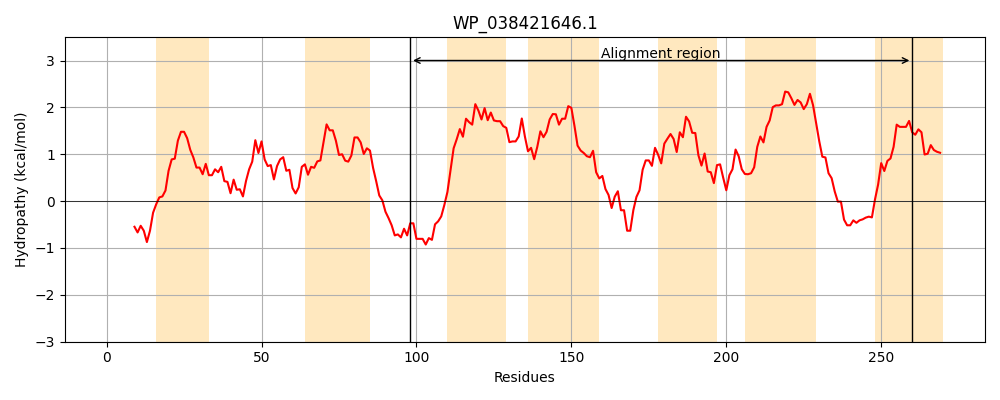
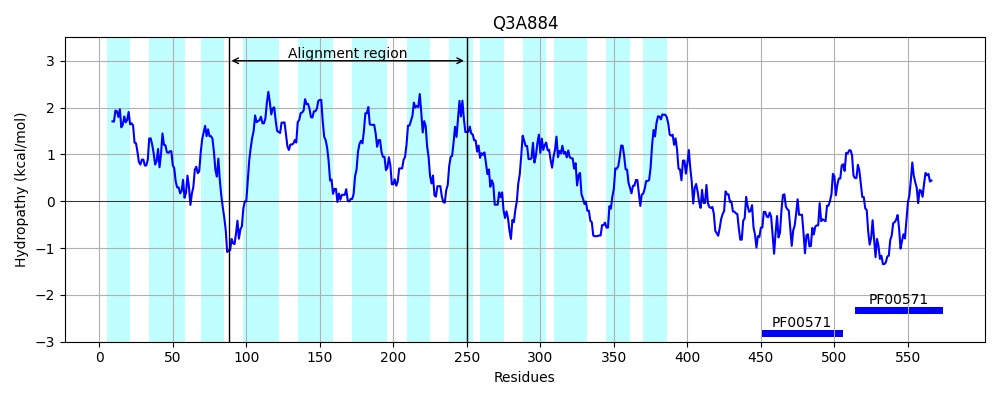
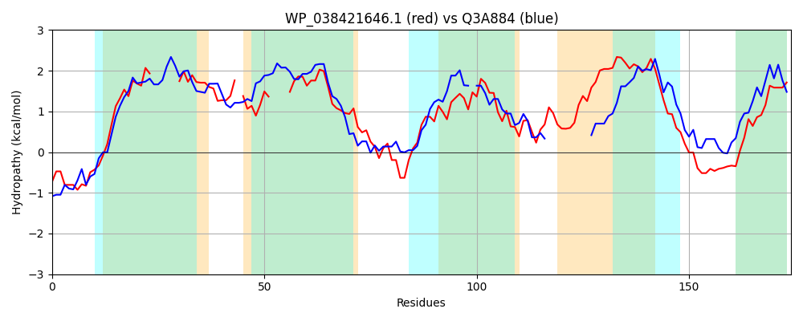

Hit Accession: Q3A884
Hit TCID: 2.A.37.3.2
Hit Description: gnl|BL_ORD_ID|13449 gnl|TC-DB|Q3A884|2.A.37.3.2 Monovalent cation antiporter, CBS domain pair-containing, putative OS=Pelobacter carbinolicus (strain DSM 2380 / Gra Bd 1) GN=Pcar_0147 PE=4 SV=1
Mach Len: 174
e:0.000912
Query TMS Count : 7
Hit TMS Count: 13
TMS-Overlap Score: 5.500000
Predicted Substrates:CHEBI:3473;cation
BLAST Alignment:
Score: 92 , Bit scores: 40 bits, E-value: 9.1e-04, Alignment length: 174, Percentage identity: 27
Query: 98 PASSRRWPGEVLRAWGIKFGLLII------VFCNLFFLSRVGSG-TLALYIF----ILQHVSVAAAVASGVLLLRDARRLARTFDAQLADLRLLMILTLGFQTILPAQIALMSARGVNTPLGWYIVIAQMAGVLLAFMLIGGLVAALRSLLGEERCRAWRGDMALFNGIVTLCV 260
P + RRW +L + GL ++ V NL FL G +LA+ F L +SVA A A+ ++++R+ A L + L IL L F +L A + + G+ A + G LL+ +L+GG+V L ++ E + + L G+V + V
Sbjct: 88 PENLRRWRHRILLFSLAETGLTLLLVGGAAVVVNLLFLRYAVPGLSLAMTTFYLVVFLGIISVATAPAATLMVVRECESEGPLTQATLTLVGLNNILAL-FGFVLAAHWLVKPSEGM----------APLLGQLLSPILVGGVVGLLLAIWAERLDKGNEFKLLLLGGVVLVTV 250 | Protein Hydropathy Plots: |
|---|
|  |  |
Pairwise Alignment-Hydropathy Plot:
|
|---|
|  |